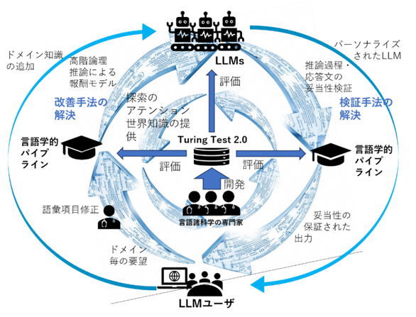
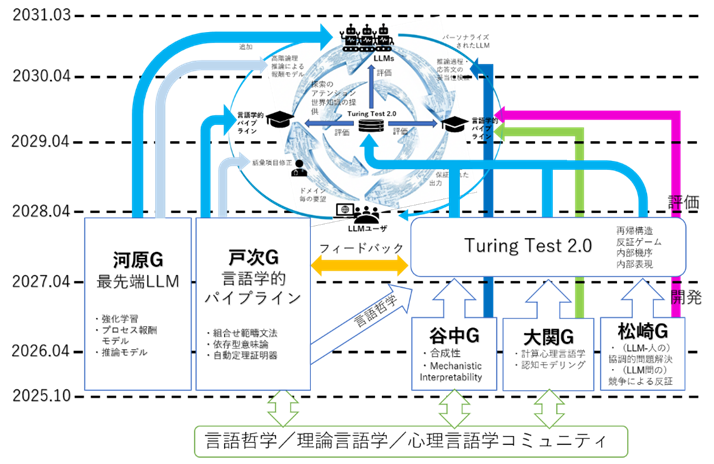

- Research Area
- Creation of an Interdisciplinary System Foundation for Realizing a Society of Human-AI Coexistence and Collaboration
- Period
- October 2025 – March 2031
- Principal Investigator
- Daisuke Bekki (Professor, Department of Information Sciences, Faculty of Core Research, Ochanomizu University)
- Co-Investigators
- Daisuke Kawahara (Professor, Faculty of Science and Engineering, Waseda University) / Takuya Matsuzaki (Professor, Department of Applied Mathematics, Faculty of Science Division I, Tokyo University of Science) / Yohei Oseki (Associate Professor, Graduate School of Arts and Sciences, The University of Tokyo) / Hitomi Yanaka (Associate Professor, Graduate School of Information Science and Technology, The University of Tokyo)
- External Link
- JST Official Page
The practical application of LLMs faces two fundamental challenges: the verification problem (it is in principle impossible to demonstrate the validity of LLM reasoning) and the improvement problem (LLMs are black boxes that are difficult to control beyond training and input data).
This project proposes a novel solution: a feedback loop between humans and LLMs mediated by a linguistic pipeline (LP) (Figure 1). A linguistic pipeline is a natural language understanding system grounded in formal syntax, formal semantics, and higher-order logic theorem proving. Unlike LLMs, its computation traces serve directly as linguistic-theoretic explanations. By enabling language science experts to operate the LP — verifying LLM reasoning and providing reward models — the project aims to integrate LLMs into society with transparency and trustworthiness.

Research Items- Item 1: Development of Turing Test 2.0 (all groups)
- Drawing on expertise in theoretical linguistics, psycholinguistics, natural language processing, and philosophy of language, we develop a benchmark that captures linguistic abilities unique to humans and beyond the reach of current LLMs.
- Item 2: Achieving the Performance Ceiling of State-of-the-Art LLMs (Kawahara Group)
- Using process reward models and reinforcement learning, we push LLMs to their limits and identify their performance ceiling on Turing Test 2.0.
- Item 3: Achieving the Performance Ceiling of the Linguistic Pipeline (Bekki Group)
- We advance the natural language inference system lightblue, establishing the performance ceiling of the linguistic pipeline based on *CCG grammar and Dependent Type Semantics (DTS).
- Item 4: Creating the Feedback Loop (Kawahara Group & Yanaka Group)
- We use the LP as a higher-order logic reward model for LLMs (4A) and build a mechanism to verify the validity of LLM outputs using the LP (4B).
- Item 5: Real-World Applications (all groups)
- We apply the integrated LLM–LP technology to real-world tasks such as fact-checking, contract review, and patent examination.
